Học kì 1, năm học 2026–2027
Viện Trí tuệ nhân tạo, Trường ĐH Công nghệ, ĐHQGHN
So sánh nhóm bằng seaborn; phản biện biểu đồ gây hiểu sai.
Ở Bài 12, bạn đã vẽ bốn dạng biểu đồ cơ bản và học năm điểm kiểm tra một hình.
Bài này so sánh phân phối giữa các nhóm và phản biện biểu đồ.
Giá nguyên căn và phòng riêng khác nhau ở trung vị hay cả phân phối?
import seaborn as sns
sns.set_theme(style="whitegrid") # phong cách chung
co_gia = df.dropna(subset=["price"]) # chỗ ở có giá
ax = sns.histplot(data=co_gia, x="price", log_scale=True)Truyền DataFrame và tên cột.log_scale=True: vẽ trên thang log.
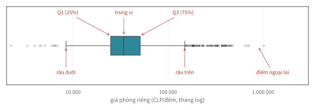
Hộp: 50% ở giữa, dài bằng IQR (Bài 10). Râu: tới 1,5 × IQR.
thu_tu = ["Shared room", "Private room",
"Entire home/apt", "Hotel room"]
ax = sns.boxplot(data=co_gia, x="price", y="room_type",
order=thu_tu, log_scale=True, showfliers=False)order: thứ tự các nhóm; showfliers=False: ẩn điểm ngoại lai.
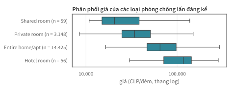
Nguyên căn có luôn đắt hơn phòng riêng không?
hai_quan = co_gia[co_gia["neighbourhood"]
.isin(["Santiago", "Las Condes"])]
ax = sns.histplot(data=hai_quan, x="price", hue="neighbourhood",
log_scale=True, stat="density",
common_norm=False)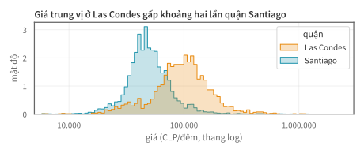
stat="density", common_norm=False: diện tích mỗi nhóm bằng 1, để so sánh hình dạng.
bon_quan = ["Santiago", "Providencia", "Las Condes", "Ñuñoa"]
sns.displot(data=co_gia[co_gia["neighbourhood"].isin(bon_quan)],
x="price", col="neighbourhood", col_order=bon_quan,
log_scale=True, stat="density", common_norm=False)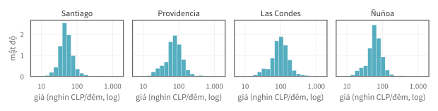
| Khi nào dùng | |
|---|---|
hue=: vẽ chung một khung, mỗi nhóm một màu | 2–3 nhóm, cần so sánh trực tiếp |
col= (sns.displot): mỗi nhóm một khung nhỏ, chung thang | nhiều nhóm; vẽ chung thì rối |
quan_dong = df["neighbourhood"].value_counts().head(8).index
pv = (co_gia[co_gia["neighbourhood"].isin(quan_dong)]
.pivot_table(values="price", index="neighbourhood",
columns="room_type", aggfunc="median")
[["Entire home/apt", "Private room"]] / 1000)
sns.heatmap(pv, annot=True, fmt=".0f", cmap="Blues")annot=True: ghi giá trị trong ô; fmt=".0f": làm tròn; đơn vị nghìn CLP/đêm.
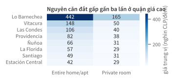
Vẽ lại hình của hai quận, bỏ stat và common_norm (mặc định là đếm).
Dự đoán trước khi chạy: hai nhóm trông thế nào? Mỗi hình trả lời câu hỏi nào?
Độ dài, góc, diện tích hay màu sắc?
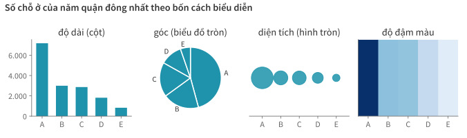
Mắt so sánh vị trí và độ dài chính xác nhất; góc, diện tích, màu kém hơn.
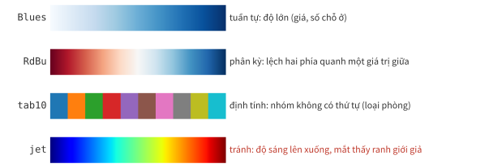
Chọn bằng tham số cmap hoặc palette.
AI vẽ nhanh, nhưng không bảo đảm cách trình bày đúng.
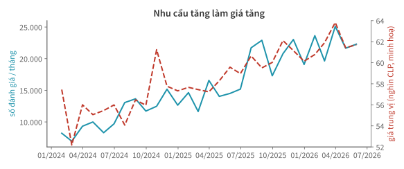
Theo hình, giá có tăng cùng nhịp với số đánh giá không?
Chuỗi giá là số minh hoạ.
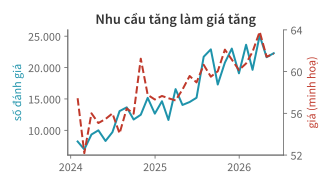
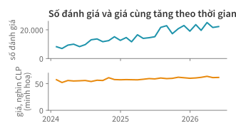
| Lỗi | Cách sửa |
|---|---|
| Hai trục y, mỗi trục một thang tự chọn | Hai khung chung trục thời gian |
| Giá +13% trông dốc như số đánh giá ×2,7 | Trục y bắt đầu từ 0 |
| Tiêu đề khẳng định nhân quả | Tiêu đề chỉ mô tả dữ liệu |
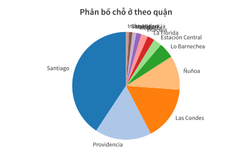
Providencia hay Las Condes có nhiều chỗ ở hơn?
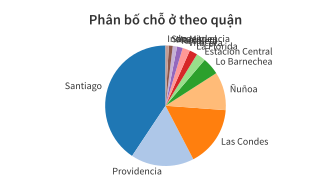
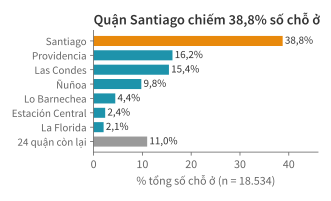
| Lỗi | Cách sửa |
|---|---|
| Góc khó so sánh: Providencia ≈ Las Condes | Thanh ngang, so sánh bằng độ dài |
| 12 màu thừa, nhãn chồng nhau | Tô nổi một quận; nhãn ở đầu thanh |
| Bỏ 19 quận (4,7%) mà không ghi | Thêm thanh “các quận còn lại” |
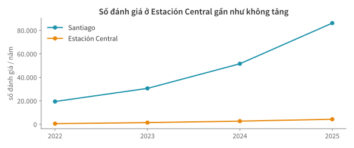
Số đánh giá ở Estación Central có thật sự gần như không tăng?
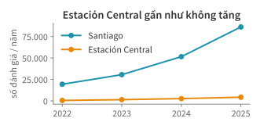
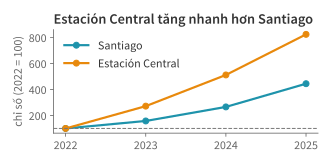
| Lỗi | Cách sửa |
|---|---|
| Hai quy mô trên một trục | Chỉ số, kỳ gốc 2022 = 100 |
| Tiêu đề kết luận sai | Tiêu đề theo chỉ số |
chi_so = hai / hai.loc[2022] * 100 # hai: số đánh giá theo năm| Hình | Lỗi | Điểm kiểm tra | Sửa |
|---|---|---|---|
| A | trục kép, tiêu đề nhân quả | trục; nguồn và diễn giải | hai khung chung trục x |
| B | góc khó so sánh, bỏ phần còn lại | dạng và màu; nguồn và diễn giải | thanh ngang, đủ 100% |
| C | hai quy mô trên một trục | trục; nguồn và diễn giải | chỉ số, kỳ gốc = 100 |
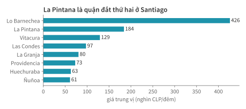
Áp dụng năm điểm kiểm tra cho hình trên. Hình thiếu gì? Sửa thế nào?
Đọc slide và chạy notebook.
import geopandas as gpd
geo = gpd.read_file("neighbourhoods.geojson") # ranh giới quận
kpi = (co_gia.groupby("neighbourhood")
.agg(gia=("price", "median"), n=("price", "size"))
.reset_index())
ban_do = geo.merge(kpi, on="neighbourhood", how="left")
ban_do.plot(column="gia", legend=True)Bản đồ tô màu theo vùng gọi là choropleth. GeoJSON chứa ranh giới các quận; plot(column="gia") tô màu mỗi quận theo cột gia.
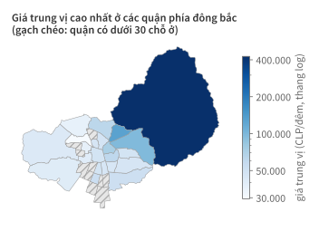
Lo Barnechea: một nửa diện tích, chỉ 791 chỗ ở có giá (4,5%).
import plotly.express as px
mau = co_gia.sample(3000, random_state=1)
px.scatter(mau, x="longitude", y="latitude", color="room_type",
hover_name="name", hover_data=["price", "neighbourhood"])Rê chuột lên một điểm để xem tên, giá, quận. Báo cáo in vẫn dùng hình tĩnh.
hue, col để so sánh phân phối giữa các nhóm.